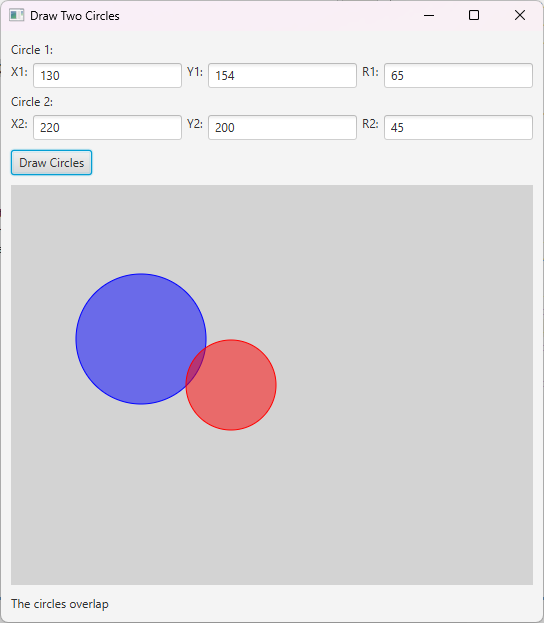

JavaFX Code Showcase
Euclidean Geometry: Circle Overlap
Developed a JavaFX application that takes user input for the center coordinates and radii of two circles. The program calculates the Euclidean distance between the circle centers using the distance formula:
\[ \text{distance} = \sqrt{(x_2 - x_1)^2 + (y_2 - y_1)^2} \]
Based on this distance and the sum and difference of the radii, the application determines whether:
- \( \text{distance} > r_1 + r_2 \): Circles are separate.
- \( \text{distance} < |r_1 - r_2| \): One circle is fully contained within the other.
- Otherwise: The circles partially overlap.
The results are visually displayed using JavaFX's drawing capabilities, along with a textual message indicating the spatial relationship between the circles.
Basic Calculator
This was the first project I took on in JavaFX, there isn't much functionality to the calculator but it was a good project to start to understand how JavaFX works
Simple JavaFX Game
Catch The Circle is a lightweight, interactive JavaFX arcade game that challenges players to click a moving circle before time runs out. Built from the ground up in Java, the project showcases modular, object-oriented design—with separate classes for game logic, UI overlays (settings, pause and game‐over screens), and difficulty management—to keep code clean and maintainable. Players can choose from four difficulty levels (Easy, Medium, Hard, Extreme), each with its own circle size, time window and number of lives. The game features smooth animations via JavaFX’s Timeline, property bindings for live score and lives displays, and custom dialogs for pausing or restarting. Finally, it’s bundled into a self-contained Windows app using the JDK’s jpackage tool and JavaFX jmods, demonstrating end-to-end expertise in modern Java deployment.
Download Final Project